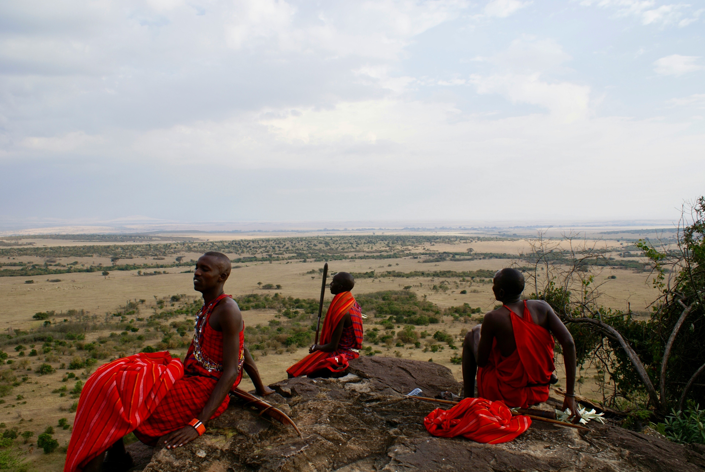

When most people think of Kenya safari, they picture the Maasai Mara — and rightly so. But Kenya's northern frontier is a different world entirely. Samburu is hotter, drier, more remote, and more dramatic. The landscape is all red dust and doum palms and black volcanic rock, cut through by the green ribbon of the Ewaso Ng'iro river. And it is home to animals you will not find anywhere else in Kenya.
"Samburu is Kenya without the crowds and without compromise — raw, wild, and utterly its own. Once you've seen a gerenuk standing on its hind legs to browse, you never forget it."
The Samburu Special Five
While the Maasai Mara has the Big Five, Samburu has its own list — five species found here that are either absent or far rarer in southern Kenya. Finding all five is the unofficial quest of every serious Samburu visitor.
🦒 Reticulated Giraffe
The world's most strikingly patterned giraffe — bold chestnut patches separated by crisp white lines. Larger and more dramatically coloured than the Maasai giraffe of the south.
🦓 Grévy's Zebra
The world's largest and most endangered zebra — thin, tightly packed stripes and enormous rounded ears. Critically endangered globally; Samburu is one of the best places to see them.
🦌 Gerenuk
The "giraffe gazelle" — extraordinarily long neck, stick-thin legs, and a unique behaviour of standing on its hind legs to browse leaves from tall acacia branches. Unmistakable.
🐪 Beisa Oryx
A large, handsome antelope with long straight horns and a striking black-and-white face mask. Built for the desert — can go days without water by raising its body temperature.
🐫 Somali Ostrich
Distinguished from the common ostrich by the male's blue-grey neck and legs (rather than pink). A northern specialist found only in Kenya's arid regions.

The Ewaso Ng'iro river is Samburu's lifeline — concentrating wildlife along its banks year-round
The Ewaso Ng'iro River — Heart of Samburu
The river is everything in Samburu. In a land that receives barely 350mm of rainfall a year, the Ewaso Ng'iro is the only permanent water source — and every animal must come to it. Elephant herds cross it daily, crocodiles sun themselves on its banks, leopards hunt along it at night, and hippos wallow in its deeper pools. Positioning your vehicle near a good river bend in the early morning is one of the most rewarding things you can do on an African safari.
Leopard Sightings
Samburu has an exceptional reputation for leopard. The riverine fig trees along the Ewaso Ng'iro are perfect leopard habitat — good cover, elevated branches for resting, and a constant supply of impala and other prey. Several resident leopards in the reserve are well habituated to vehicles and can be viewed at remarkably close range.
Samburu Practical Info
- Distance from Nairobi: 330 km (5–6 hours drive) or 1-hour flight to Samburu airstrip
- Best season: Year-round — dry seasons (Jun–Oct, Jan–Feb) are best
- Time needed: Minimum 2 nights, ideally 3
- Entry fee: USD 60 per adult (non-resident)
- Unique to Samburu: Night game drives permitted (unlike most national parks)
- Combine with: Maasai Mara for a complete Kenya north-south circuit
Night Game Drives
One of Samburu's great advantages over southern Kenya's national parks is that night drives are permitted. This opens up a completely different world — leopard on the hunt, porcupine, aardvark, lesser galago (bushbabies), and the eerie eyes of nocturnal creatures in the spotlight. If your lodge offers night drives, do not miss them.
Samburu Culture
The Samburu people — closely related to the Maasai — have lived alongside the wildlife of northern Kenya for centuries. Their traditional semi-nomadic pastoralist lifestyle, colourful beaded jewellery, and red-ochre warrior dress are deeply tied to this landscape. Many Samburu lodges offer cultural visits to villages, camel rides guided by Samburu elders, and the chance to hear traditional songs performed in the bush at sunset. These experiences add a depth to a Samburu safari that pure game viewing cannot provide.
Best Time to Visit Samburu
Samburu is a year-round destination — unlike the Maasai Mara, it does not have a single peak season defined by the Migration. The dry seasons (June–October and January–February) offer the best game viewing as animals concentrate around the river. The short and long rain seasons (November and March–May) bring green landscapes and excellent birdlife but can make some tracks impassable. October–November sees Samburu's most intense heat — still rewarding but physically demanding.